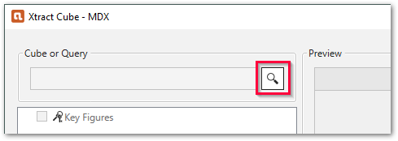

Xtract Cube
This page shows how to use the Xtract Cube component.
The Xtract Cube component can be used to extract MDX or BICS data directly from BW InfoProviders (e.g., Cubes) or from BW Queries. The BW Queries can be based on InfoProviders.
Prerequisites
- A connection to an SAP system is available, see SAP Connection.
- The SAP user has sufficient user rights, see SAP Authority Objects.
- To extract a BW Query, the attribute Allow External Access to this Query of the Query must be active in the BEx Query Designer or the BW Modeling Tool, see Troubleshooting Article: Allow external access to BW Queries.
Warning
Missing Authorization.
To use the Xtract Cube component, access to the designated authority objects (RFC) in SAP must be available. Adjust SAP Authority Objects: BW Query / BW Cube accordingly.
MDX versus BICS
The Xtract Cube component can extract data using the OLAP BAPI Interface (MDX) or the native BICs interface. The following table shows the differences between the two extractors:
| MDX | BICS |
|---|---|
Lookup syntax for BEx Queries: [tech. name of InfoPovider]/[tech. name of BEx Query] Example: 0SD_C03/0SD_C03_Q0018 | Lookup syntax for BEx Queries: [tech. name of BEx Query] Example: 0SD_C03_Q0018 |
Lookup syntax for InfoProviders: $[tech. name of InfoProvoider] Example: $0SD_C03 | Lookup syntax for InfoProviders: [tech. name of InfoProvider] Example: 0SD_C03 |
| Wildcards in lookup: The BEx-Query setting Allow External Access to BW Queries is required. Example: *0SD_C03_Q0018 instead of 0SD_C03/0SD_C03_Q0018 | Wildcards in lookup: not required and therefore not supported |
| Supported InfoProviders: InfoCubes, Multiproviders, Composite Providers | Supported InfoProviders: InfoCubes, MuliProviders, Composite Providers, DSOs |
| Column names of Key figures: EnterpriseID | Column names of Key figures: Technical name If techn. name is empty: name of the base measure. If name of the base measure is empty: EnterpriseID. Tip: In case of duplicate names, change the technical name in the BEx Query Designer. |
| Character limit for dimension members: max. 60 characters | Character limit for dimension members: - |
Add an Xtract Cube Component
Follow the steps below to add an Xtract Table component to your workflow:
- Drag & drop the Xtract component to your Alteryx workflow .
- Assign an existing SAP connection .
- Click [ Edit] to open the main window of the component.
The majority of the functions of the component can be accessed in the main window.
Look Up a BW Cube or Query
- In the main window of the component, click [ ]. The window Cube and Query Lookup opens.
 -
Select the Extractor, Datasource Type and Extraction Settings of the object .
Option Description Extractor defines if data is extracted using the OLAP BAPI Interface (MDX) or the native BICS Interface. BICS can only be used in combination with the NetWeaver RFC protocol. Datasource Type defines if the look up searches for a BEx Query or an InfoProvider. Extraction Settings only available for the MDX extractor. Use Only Structure if your BWCube extraction was created in an older software version, see extraction settings for more information. -
In the search bar, enter the name of a Query or a BW Cube / InfoProvider . Use wildcards (*), if needed.
- Click [ ]. Search results are displayed.
Alternatively click [Direct Load] to skip the lookup and load the BW Cube / InfoProvider directly. [Direct Load] only works if the full name is entered correctly in the search bar. - Select a Query or BW Cube / InfoProvider and click [OK] to confirm.
The application now returns to the main window of the component.
Note
Click [Refresh Metadata] to renew metadata. This is necessary if a data source has been adjusted in SAP, another source system has been connected, or the source system has been updated.
Warning
Invalid action
A BW Query does not apprear in the list.
Switch on the attribute Allow External Access to this Query in the BEx Query Designer or the BW Modeling Tool. For additional details see the Troubleshooting Article: Allow external access to BW Queries.
Define the Xtract Cube Component
The Xtract Cube component offers the following options for Query and BW Cube extractions:
-
In the tree structure of the component, select the measure (key figures) you want to extract
Tip
The tree structure represents the metadata of the Query (or InfoProvider).
The first directory contains all the measures (key figures) . The following directories correspond to dimensions and often contain additional dimension properties . -
Within the key figures directory, click the arrow to display the available units. Select a unit, if needed.
- In the following directories, select the dimensions and properties you want to extract .
- Optional: Right-click on a dimension to add filters to the dimension, see Dimension Filters.
- Optional: If a BW Query has a defined variable, click [Edit Variables] to edit the variable or provide input values, see Variables.
- Click [Load live preview] to display a live preview of the data. For every selected dimension or property, a key figure and a unit is displayed in the result.
- Check the Extraction Settings before running the workflow.
- Click [OK] to save the component.
You can now run the workflow.